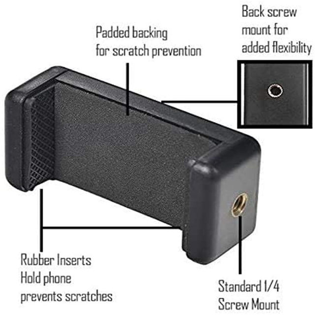
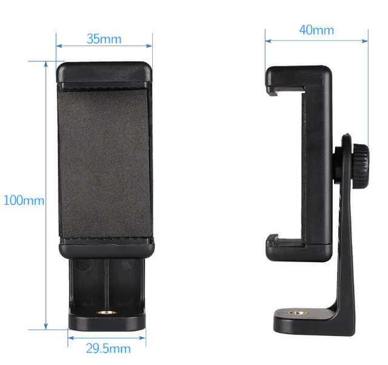
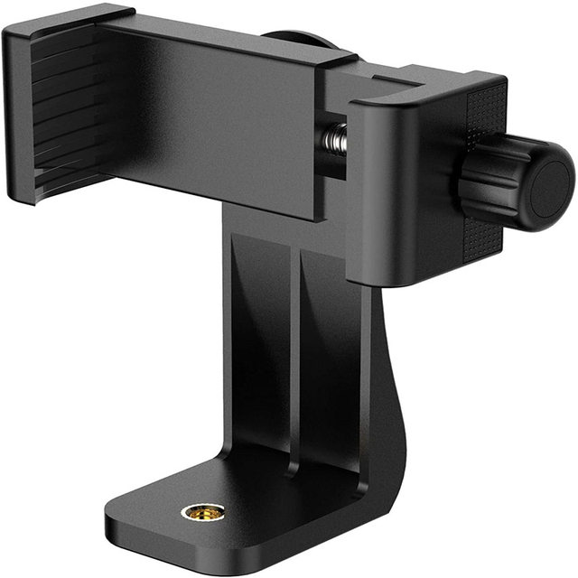
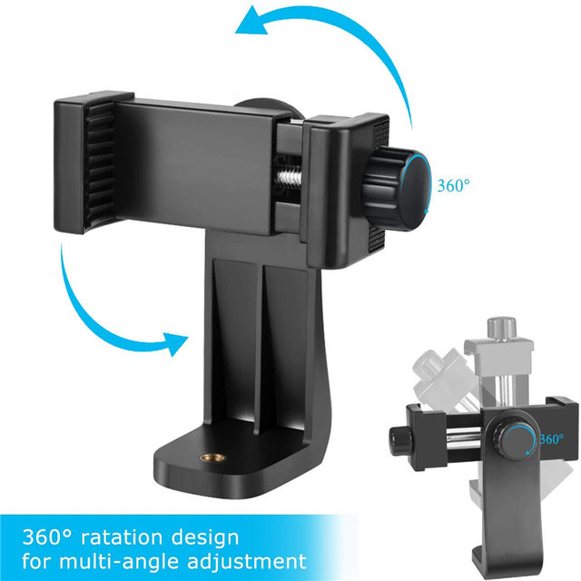
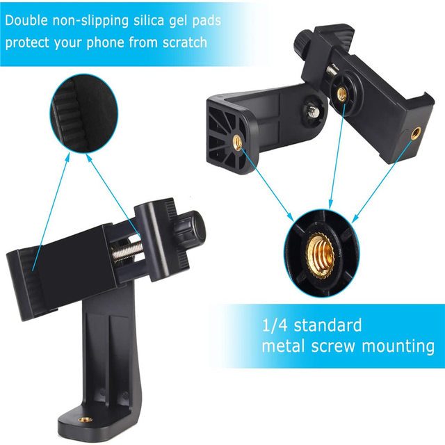
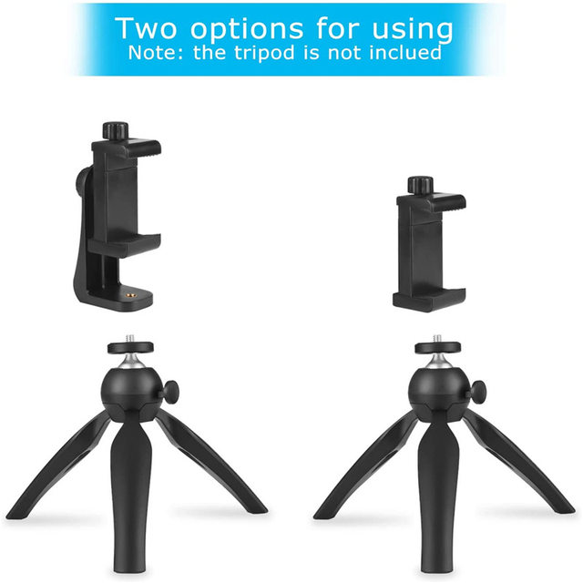
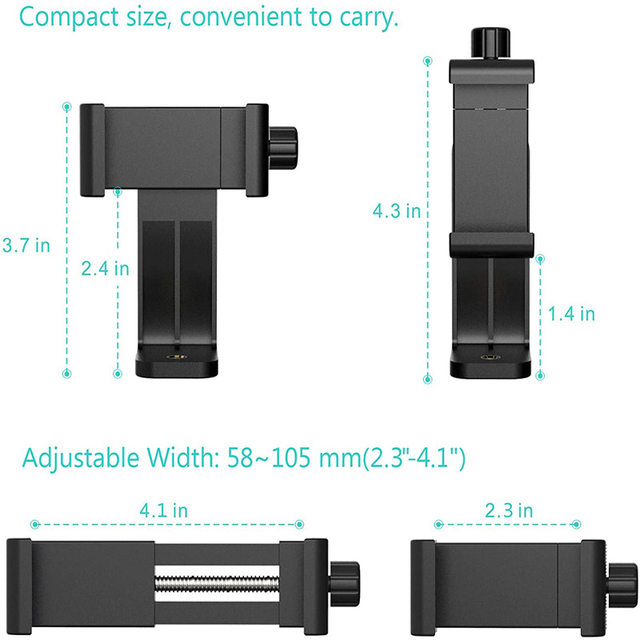
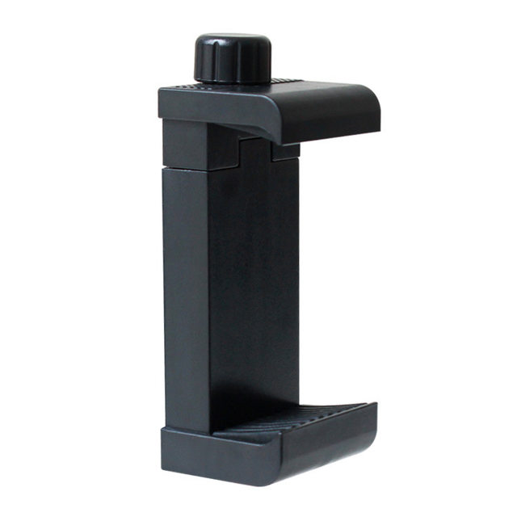

• Universal 360° Clip :The Universal 360° Phone Clip Bracket Tripod Mount Adapter Stand Clipper Selfie Holder is designed to accommodate a wide range of devices, including Samsung, iPhone, and Huawei.
• Vertical Adjustment :Featuring vertical adjustment capabilities, this stand allows you to find the perfect angle for your selfies or videos, ensuring they're perfect every time.
• Lightweight Mini Tripod :Crafted as a lightweight mini tripod, this stand is easy to carry around, making it perfect for on-the-go use.
• Durable Plastic Material :Constructed from durable plastic, this stand is designed to withstand the rigors of daily use, ensuring long-lasting performance.
• Easy Selfie Holder :With its integrated selfie holder, this stand allows you to capture stunning photos and videos with ease, making it a must-have accessory for any social media enthusiast.
• Compact and Portable :Its compact and portable design makes it easy to fit into any bag or pocket, ensuring you can capture your moments anytime, anywhere.
Works with all current smartphones on the market with or without a case
Adjustable clamp height between 58mm - 100mm
Uses industry standard 1/4" - 20 mounts
Lets you rotate your phone vertically (Portrait) and horizontally (Landscape)
Guides located on the back to assist with horizontal or vertical positioning
Smartphone holder is detachable from rotation riser
Smartphone holder has two mounting location







